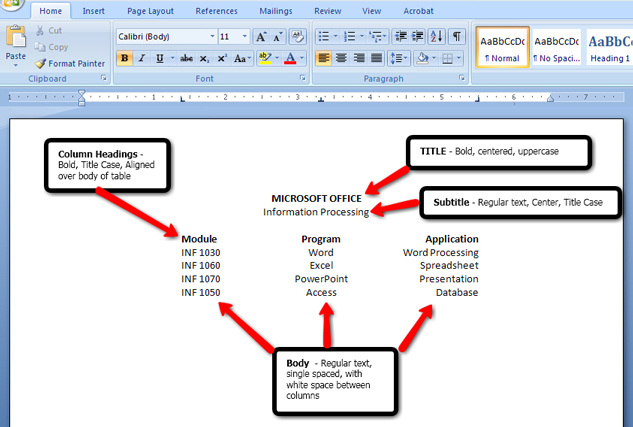
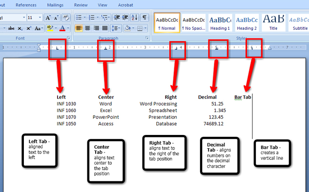
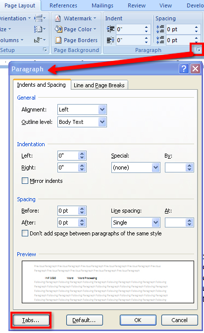
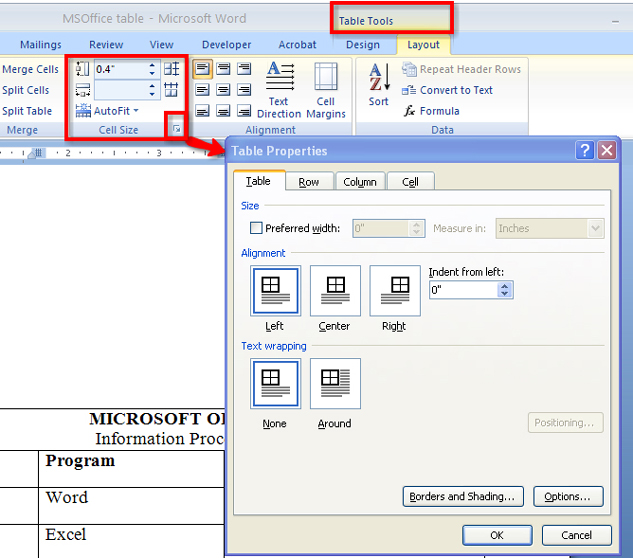
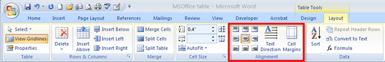
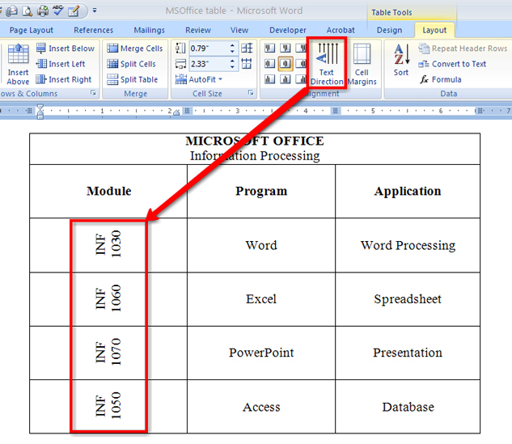
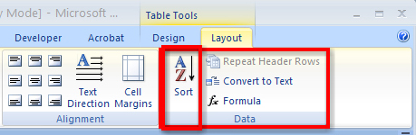

Remember that there are two ways to create a table in Microsoft Word: by using tabs, and by using the Table feature.
Let’s review the basic table structure by studying the following diagram:

Microsoft product screen shot(s) reprinted with permission from Microsoft Corporation.
This diagram shows the different tab stops you can use to create a basic table.

Microsoft product screen shot(s) reprinted with permission from Microsoft Corporation.
You can set tabs in two ways: by using the Tab button on the ruler to select the appropriate tab (left, right, center, decimal, bar):
Or by using the Paragraph dialog box to access the Tab window. Remember that the Paragraph tab is located on the Home tab inside the Page Layout tab.

Microsoft product screen shot(s) reprinted with permission from Microsoft Corporation.
Now let’s see how easy it is to convert text that has been set up with tabs to a table. Go to the Instructional Videos and watch “Text to Table.”
After you convert text to a table, you may need to make some modifications. Go to the Instructional Videos and watch “Modifications to Tables.” You will see how to merge cells and delete extra cells.
Sometimes you want to do the opposite and convert a table to text. Go to the Instructional Videos and watch “Table to Text” to learn how to convert a table to text using the Table Tools, Layout tab, Data group, and selecting Convert to Text.
You may also need to adjust the size of the cells and the table. Go to the Instructional Videos and watch “Resizing Your Table” to see how to adjust the table manually using your mouse, as well as by using the Table Tools menu. You can access Table Properties in the Table Tools menu as shown in the diagram, or you can right-click on the table to bring up another menu of available options.

Microsoft product screen shot(s) reprinted with permission from Microsoft Corporation.
You can also change the position of the text in the cell by using the Alignment group in the Layout tab. This diagram shows the options available in the alignment group in the Layout menu.

Microsoft product screen shot(s) reprinted with permission from Microsoft Corporation.
Go to the Instructional Videos and watch “Text Alignment” to see how easy it is to align text to make your table look more balanced.
Want to totally change the look of your table? Change the direction of the text in the cell using the Text Alignment button in the Alignment group in the Layout tab.

Microsoft product screen shot(s) reprinted with permission from Microsoft Corporation.
A very helpful feature available in the Table function is the Sort command, which is located in the Data group in the Layout tab in Table Tools. You can use the command to sort the contents in a table by column, or by text, number, or date. Look at the diagram to see the location of the Sort command. Then go to the Instructional Videos and watch “Sorting Data in Your Table” to see how the Sort functions will reorganize the contents of your cell. Be sure when you sort cells to carefully select the data you want to include in the sort.

Microsoft product screen shot(s) reprinted with permission from Microsoft Corporation.
Designing good-looking tables quickly is very easy in Microsoft Word 2007. In the Design menu, there are many different built-in Table Styles with automatic formatting for you to choose from. You can also adjust the Table Style options to change where shading is applied.
Go to the Instructional Videos and watch “Adding Shading and Styles to Your Table” to learn how to use the Tables Design tab tools to automatically apply built-in Table Styles that allow you to add borders and shading to your document, and to see how selecting different Table Style Options changes how the shading is applied.
You can also create your own custom look for your table by applying Borders and Shading. Have fun exploring the different border and shading options.
There is one more way to create a Table in Microsoft Word. Go to the Instructional Videos and watch “Creating Tables” to learn how to create a table using the Draw Table feature.
For more help using this feature, use Microsoft Word’s built-in Help menus, or visit Microsoft Office Online Help and How-to and keyword search “Draw Table.”